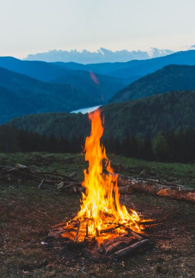

2019 Summer Camp
LIFEMAKER CAMPS
Retreats for life education, togetherness and celebration.
30th March to 20th June, 2019
Main website for schedule and application
Host: Your human family in village Saalig, Dharamsala, Himachal Pradesh, India.
[Lifemaker’s pilot village for awakened self governance.]
Let us find and sustain together, ‘that need’ which can not be separated from Human existence.

Himalayan wilderness, family, togetherness, bliss, dance, music, yoga, question & answer, proposals, discussion, contemplation, meditation, understanding, realisation, resolution & celebration.
About the camp
This summer of 2019, in the Dhauladhar mountains of Himalayas, Dharamsala, India we are going to host a series of small gatherings for you aimed to manifest a womb for knowledge, healing, connections, invaluable possibilities and festive celebration of universal human family & togetherness. It is an opportunity to take the next big leap in attaining holistic, objective and experiential understanding of self as human, existence as co-existence and ‘The way of happy life’. We will have a beautiful and enlightening time together and every 10 day circle will make meaningful connections that last. From therein, we want you to go back into the world with a clearer life resolution and a bright smile that sustains!
We will camp by a clear water stream on a site at 1400m surrounded by forest, green valleys, blue streams, tall snow capped peaks touching the sky (represnting consciousness) and eagle’s view of the human civilisation of Dharamsala (reprenting material existence). Together, we will bridge from material to the sky.
The closest village is Saalag - Lifemaker’s pilot village for Jaagrit Swarajya (Awakened self reliance). The space is in natural silence. In that we will enjoy the chirping of birds, sound of water & wind, notes of music and insightful conversations. There are spaces around, to go for walks and moments of silent introspection and connection. There is good phone and data signal.
The camp is for thinkers and those on journey of self realisation and service to co-existence
How can I/my family/society be in continuity of happiness, who or what am I, what is everything or {something particular like human, humanity, consciousness, energy, existence..}, how does existence work, what are our most fundamental needs that we need to fulfill most, what does any relationship mean and how to fulfill them, what is nature of our conscious and physical needs, what do we need to co-create, maintain & pass on to our children & future generations materially and consciously, what is full potential of human life, how to get there, what to do, what not to do, what about money, career, entreprenuership, development, evolution, economics, science, technology, abundance, freedom, democracy, power, politics, religion, family, villages, society, food, environment, world order, human behavior, future of humanity so on and so forth..?
[Activities] There will be a relaxed schedule with talks, QnA, meditation, Yoga as the main anchor of the program. You can take a dip in the fresh water stream flowing right past the campsite, sip chai in the cafe by the stream, relax, feel the moment and high vibe of nature and have an intimate and insightful exchange with hosts and participants. In the nights we will probably sing or dance by bonfire and engage with each other. There is also a hall with full valley view to circle together for a meditation or some activity like film screening, or to do morning yoga.
Content to discuss, understand and realise within
- Holistic description of Self as human and existence as co-existence (across all major aspects)
- The dharma, values and potential of human life
- Conscious needs and material needs
- The kind of system and order humanity and family needs covering education, health, production, exchange and governance.
- Economics, production and technology
- Environment and nature
- Model and self-governance for undivided human society
- Resolution and happiness
- Abundance and contentment
- Fearlessness and peace
- Co-existence and bliss
- Family and universal family
- Human and humanity
Why this camp?
The camp is for us - our human family - present and future. We simply want to share same understanding and co-create a beautiful world together as undivided human family on Earth. We wish to manifest a nurturing and enlightening environment and social order that gives an equal opportunity of happy life and abundant living for ourselves, our children, all humanity and every human yet to come.
Lifemaker is presenting the knowledge and model for universal human resolution and has started implementing it on ground in village Saalig. We are looking to share it and gain co-creators and momentum.
As we get closer on our human life journey with same understanding, we will become the first few links of a contagious chain of ‘good for all’, which has the womb of possibility to form a sequence. From sequences will emerge a pattern, and from patterns across the world will emerge the humanistic system and world order, that has constitution and innateness to last in a sustainable way for as long as humanity lasts on Earth. We envision an order which is wisely implemented, strong and benevolent enough to withstand the test of time and corruption, forever, much beyond our individual lifetimes and selves. Let us think, explore and collaborate together on finding and building on beauty that lasts foreverin our families and the united human family, even long after we are gone from Earth.
There is so much to know and so much to let go. Then there is lot to do together, which will automatically follow the knowing. This is why are are inviting you to understand with us. In 10 days we can’t expect to know all about our self and the infinite all-that-is. But we will start diving into the dark cave of our inner being and perhaps we will find light at the very bottom of it. And perhaps, just perhaps, that light will shine ever more bright within us from there on.
The host team
The event is being conducted officially by Lifemaker society, which will be a registered society or trust by the summer.
Ayush will guide you through a deep and holistic exploration through darshana (philosophy), discussion/QnA, contemplation & meditation. These sessions are aimed to give answers with evidence at both, conscious and material plane of existence as co-existence. He will conduct discussions and practice sessions around breathing, energy, body, self realisation of co-existence, human centeric co-existentialism. Ayush, an entrepreneur, computer engineer, software architect and full stack product and UX developer by profession. He also happens to be a budding vocalist, flutist, artist, a radio jockey and as well the guiding force of Lifemaker society and its main visionary. He will be the one to present to you the holistic view of everything from life to Lifemaker.
You should check his podcast here, where he is talking about these subjects only, these days! He can be found on Facebook.
Ayush will be joined by Dhyana a Yogi Saadhaka from Italy, who also happens to be the other half of their marriage relationship <3 :) She will help you stretch in the mornings, introduce some tantric exercies, talk about divine feminine, engage you in a painting session, or consciousness dance.. She will also ensure you love the nourinshing food you eat - preferably local, home grown village food. She will do her best to bring the nurturing feminine touch and make the environment homely for you.
Shantanu - a school dropout, wordpress developer, entrepreneur since 16, Dhyana-Ayush’s extended family member, who stays with them with his wife Pari, is helping with the website, operations, troubleshooting and caretaking on the ground. Surinder an organic farmer, shopkeeper and social worker of village Saalig, also part of Lifemaker society, will take us for a trek or overnight camp in higher wilderness. He also happens to be the operations manager of our Dharamsala Lifemaker program. He will share his vision for village Saalig and the world. Shobha didi from Nepal will share her motivational life story as a woman. Her family is also a part of Lifemaker team. Sunny and family are owners and builders of the camping site and will give you adventure rides in the jeep - to and from the camp site :)
About Saalig
Saalig also happens to be Lifemaker’s seed village for the model of Awakened Self-reliance as universal human tradition on Earth. You will get to see the Lifemaker model growing as a sapling on the ground here. We will see the village program. Meet the engaging families. We will have a cultural and knowledge exchange with this village, which we envision to put on the world map as the first village to get started on the model of perfected human co-existence.
Cost per person
The camp has a cost of Rs. 1000 per person per day to cover for food, tent stay, site rent, infrastructure, operations, staff and for furthering Lifemaker’s aims and objectives. Ordered food at cafe is not covered in this cost.
Inquisitive folks with family income of less than Rs. 1.5 lacs per annum can apply for scholarship
Stay
Stay is in tents. Each tent will have a mattress. You will have to bring your own sleeping bag. If you need one, let us know during registration and we can buy or rent one for you at par to the cost of the thing. You must let us know your sleeping preference in terms of single tent, double tent or family tent. If you are bringing your own tent, let us know that as well. The toilets and baths will be outdoor. Though, we recommend that the adjacent river is the best place to take a dip.
An invitation
We invite you as part of your human family to explore with us possibilities of finding that what you need and what you truly seek, what every human seeks deep within. We recommend that you come along with at least one more person from your family, couple or friends. That will have a much more stronger impact over time because when two share the same understanding, they help each other grow and their relationship becomes much more fulfilling.
Overall, this camp carries the potential to positively change not only your life, but every-thing that you are connected to and will be, long after you as human individual, your current family members and current human society are gone from the Earth. Lets have a vision spanning thousands of years beyond our lifetime, hundreds and thousands of generation of humans to come from us (including possibly our own physical lineage). We wish to give us and them something beautiful that they will appreciate, nurture, preserve and pass on for as long as they are on Earth.